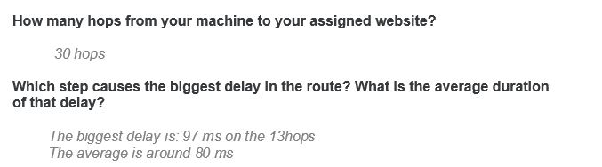
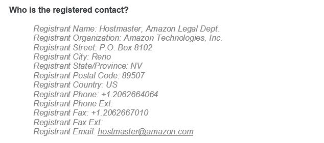
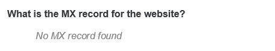
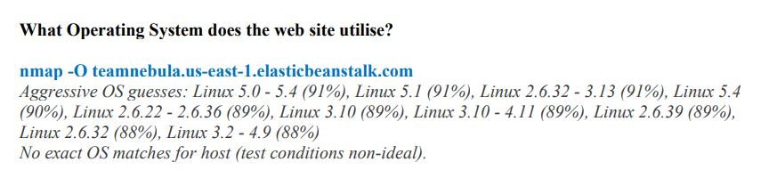
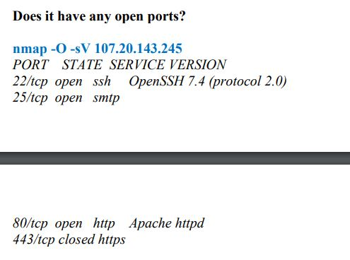
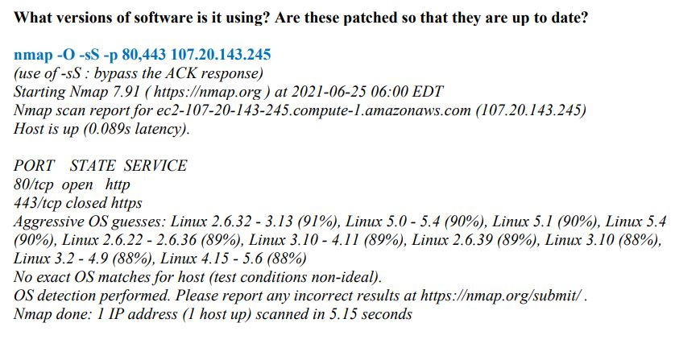
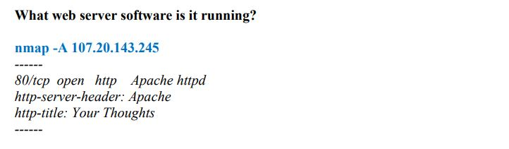
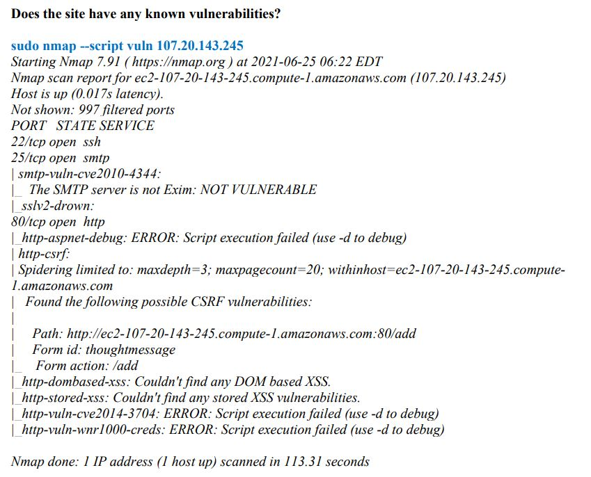
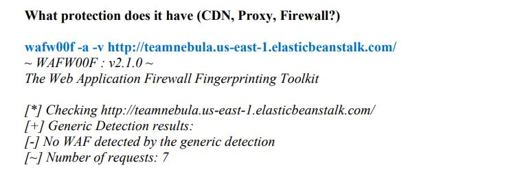
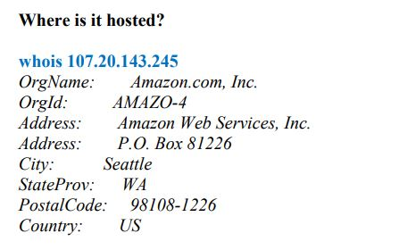

Response
Ipsum Dolor
Vehicula fermentum ligula at pretium. Suspendisse semper iaculis eros, eu aliquam iaculis. Phasellus ultrices diam sit amet orci lacinia sed consequat.
Artefacts, scanning and analysis
All artefacts (designs etc) demonstrating development over the duration of the module The output of the scanning and analysis tools, answers to and outputs from exercises carried out during the module, including your individual contributions to the projects.
Basic scanning
During this module tools were used to scan the opposite website, I use the tool tracert or traceroute. This tool uses the Time To Live (TTL), the hop and the asterisk, the Time To Live (TTL) allows us to give the lifetime, in order to determine the intermediate routers between the source and the destination. The hop allows us to check each router transition and the asterisk tells us the timeout of the command and that the router does not respond to the received packet, it is possible that the blocking is done at the firewall level, it is possible a traceroute display incomplete data and it's not accurate enough (CySecBot, 2018).

The WHOIS command raises many issues regarding the criticality of the data revealed, including domain owner, contact information, email and phone numbers. The problems associated with sharing data presented in WHOIS have been discussed by Cybersecurity tech Accord to improve the security of the data disclosed by WHOIS. This information raises issues regarding the application of the General Data Protection Regulation (GDPR). Paradoxically, WHOIS data managers use the General Data Protection Regulation (GDPR) as an excuse not to share this information (Tech Accord, 2021).
Not only does WHOis scanning expose the email or phone number for a domain, but it also exposes the email or phone number for that domain, allowing cybercriminals to reuse these unique email addresses or phone numbers instead of purchasing thousands of phones with phone numbers or creating thousands of email addresses. This creates a concern regarding the GDPR regulations. (Barlow, 2018).

no mx records were found in the opposite team, mx records and domain names are essential, without mx records, this indicates that the website will have a bad reputation. Domain names are important, if a domain name is trusted, it can deliver messages online. Mailbox providers (MBPs) and internet service providers (ISP) can detect genuine and fake mail, so domain reputation is fundamental (Mxtoolbox, N.D).

Kali scanning
During the scanning process against the opposing team, I mainly used the tools available on kali linux, to answer several questions. By using the nmap command with the -O function, it allows to detect what kind of OS the target website is using, this command sends TCP and UDP packets on a specific port to interpret the answer, it will then compare the result with 2600 OS in the database (Petters, 2020).



Using the nmap -a command we can see that the web server used is Apache httpd, Apache is an http server and distributed by the Apache license (Apache, N.D).

The vuln command of nmap allows to list predefined categories to which each script belongs, these different functions are for example: authentication, broadcast, dos, malware etc... in this example we can see that there is a vulnerability detected with the CSRF, by having the form action: /add and the id "thought message" it is then possible to attack this form by posting unwanted messages continuously (Borges, 2020).

The WAF is there when a web application or a transport security within the site is used. The WAF allows to check and recognize the architecture of the site. Wafw00f is a tool developed on python that automatically sets up procedures to find a WAF. It makes queries to the web server using the http protocol and analyses the responses to see if there is a firewall enabled (Sankar, 2018).

The whois command can using the TCP protocol query a website and detect information about the website such as: registered domain names, IP address block, name servers. It allows communication with the WHOIS server and using port 43 stock and provides the database information to be understood by us (Kili, 2018).

References :
CySecBot (2018) Working of Traceroute using Wireshark. Available from: https://www.maritimecybersecurity.center/working-of-traceroute-using-wireshark/ [Accessed 19 June 2021].
Tech Accord (2021) WHOIS counting ? The Cybersecurity Tech Accord response to ICANN’s most recent recommendations. Available from : https://cybertechaccord.org/whois-counting-the-cybersecurity-tech-accord-response-to-icanns-most-recent-recommendations/ [Accessed 19 June 2021].
Barlow, C. (2018) WHOIS Behind Cyberattacks? Under GDPR, We May Not Know. Available from: https://securityintelligence.com/whois-behind-cyberattacks-under-gdpr-we-may-not-know [Accessed 13 June 2021].
Mxtoolbox (N.D) why your domain reputation matters. Available from: https://mxtoolbox.com/dmarc/email-delivery/why-your-domain-reputation-matters [Accessed 19 June 2021].
Petters, J (2020) How to Use Nmap: Commands and Tutorial Guide. Available from: https://www.varonis.com/blog/nmap-commands/ [Accessed 20 July 2021].
Apaches (N.D) How to Use Nmap: The Number One HTTP Server On The Internet. Available from: https://httpd.apache.org/ [Accessed 20 July 2021].
Borges, E (2020) How to Detect CVEs Using Nmap Vulnerability Scan Scripts. Available from: https://securitytrails.com/blog/nmap-vulnerability-scan [Accessed 20 July 2021].
Sankar, R (2018) Reconnaissance, Identification & Fingerprinting of Web Application Firewall using WAFW00F. Available from: https://kalilinuxtutorials.com/wafw00f/ [Accessed 21 July 2021].
Kili, A (2018) How to Get Domain and IP Address Information Using WHOIS Command. Available from: https://www.tecmint.com/whois-command-get-domain-and-ip-address-information/ [Accessed 21 July 2021].